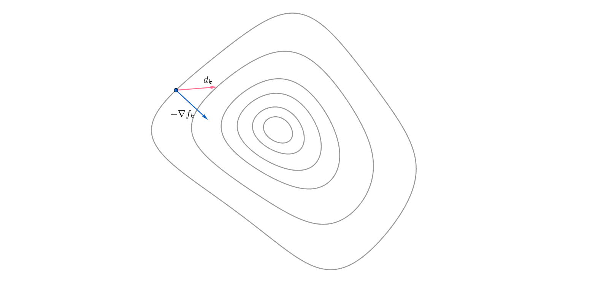
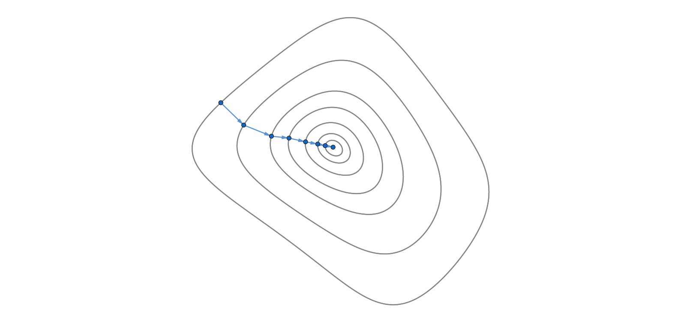
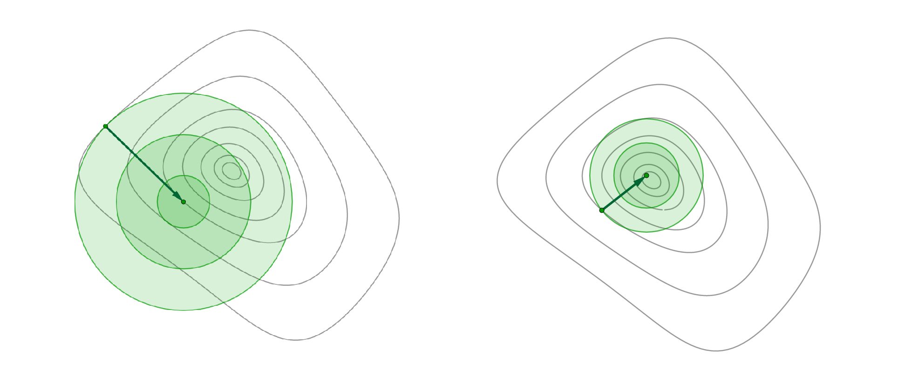
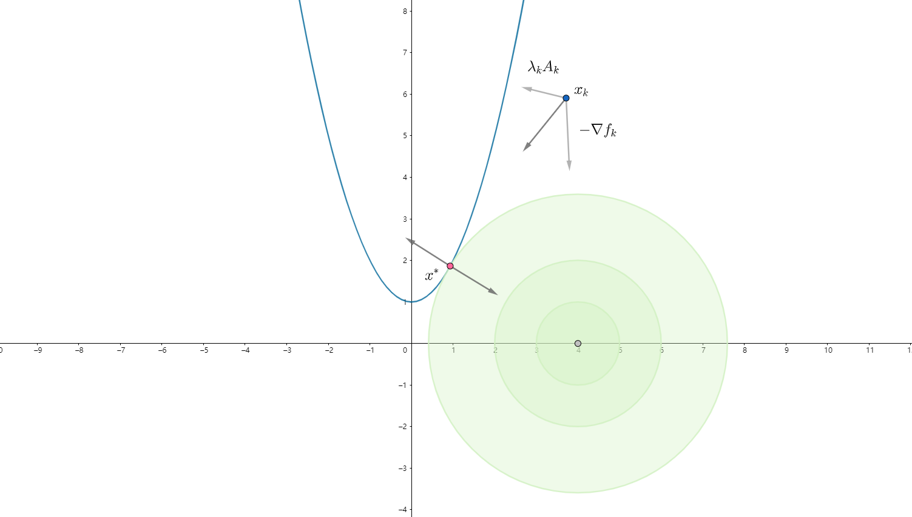
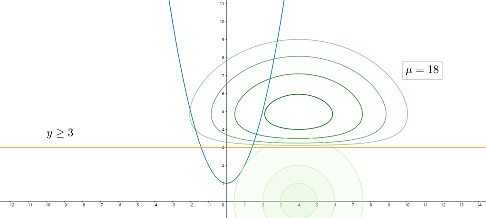
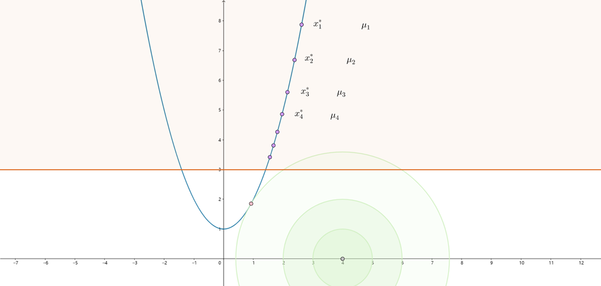
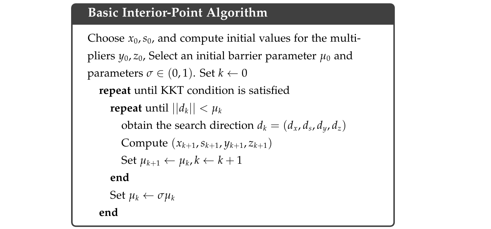

前言
优化是自然界和人类社会最为普遍行为，物理系统趋于较低的能量，化学分子相互作用以达到最小的电子势能，投资者寻求最佳收益，工程师寻求最佳性能，优化是宇宙运行的本质之一。在本文中，我们将主要讨论非线性规划的数值方法。
根据函数性质，优化问题可分为线性优化和非线性优化；根据是否含有约束，可以分为无约束优化和有约束优化。一般来说，有约束优化问题要比无约束优化问题更难求解，因此本文将先介绍非线性优化的求解算法，再介绍非线性规划的内点法。阅读本文之前最好对高等数学的基础知识有一定了解。
非线性优化
问题描述与必要性条件
非线性优化问题是指，对于一个给定的非线性函数$f(x)$，确定出使函数值最小的自变量$x$：
$$\min _{x} f(x)$$
其中$f(x)$称为目标函数，$x$称为未知量或参数。实际情况中的最大化问题一般都可以通过简单的变换转化为最小值问题，因此我们仅考虑最小化一种情况。由高等数学可知，在无约束的情况下，该问题的解应满足如下一阶条件和二阶条件：
一阶必要条件：$\nabla f\left(x^{*}\right)=0$
二阶必要条件：$\nabla f(x^*)=0, \nabla^2 f(x^*)\ge 0$
对于参数为多维的情况，$\nabla f\left(x^{}\right)$表示梯度向量，$\nabla^2 f\left(x^{}\right)$表示海森矩阵，而符号$\ge$表示海森矩阵半正定。一阶必要条件表明目标函数达到极值点，而二阶必要条件进一步将其限定为极小值点。对于一般情况，二阶必要条件只能判定其为局部最优解，而不一定为全局最小值；只有当目标函数为凸函数时，局部极小才等价为全局极小值。
非线性优化的数值方法
对于复杂的非线性函数，计算机没办法根据必要条件直接得到解，而是一般通过数值迭代的方法从一个初始点一步步逼近问题的解$x^*$。用数学的语言表述为，从一个初始点$x_0$，通过构造一个迭代序列$\left{x_{k}\right}_{k=0}^{\infty}$，使$x_k\to x^*$。这种迭代的思路可以分为两种：线搜索算法和置信域算法。在本文中我们主要讨论线搜索的方法。
在线搜索策略中，算法每次迭代会先在当前参数$x_k$处确定一个参数的迭代方向$d_k$，然后让参数在该方向上移动一定步长$\alpha_k$，即：
$$x_{k+1}=x_k+\alpha_k d_k$$
迭代步长
假定我们已经确定了一个迭代方向$d_k$，则原优化问题可以转化为一个一维搜索问题：
$$\min {\alpha>0} f\left(x{k}+\alpha d_{k}\right)$$
我们可以进行精确一维搜索，采用例如二分法、黄金分割法来求出该一维问题的最佳步长；当然我们也可以采用非精确一维搜索来确定$\alpha_k$，只要其满足：
$$f(x_k+\alpha_k d_k) < f(x_k)$$
实际上，在现代优化算法中，一般采取非精确一维搜索的策略，虽然其每次迭代目标函数的下降幅度不如精确一维搜索，但整体的优化效率更高。
梯度法
非线性优化的主要问题在于确定一个适当的迭代方向$d_k$。最速下降方向，即负梯度方向$-\nabla f(x_k)$是最明显的迭代方向，它本身就描述目标函数下降最快的方向。除了最速下降方向，任何与其夹角小于$\pi/2$的方向，都可以作为迭代方向，都能够保证目标函数下降。即$d_k=-B_k \nabla f_k$，$B_k$为·正定矩阵。如图所示，灰色表示原函数的等高线，蓝色向量表示目标函数梯度，同样指向了等高线的法向，红色表示一种可行的迭代方向。

上面我们已经说过，在确定了迭代方向后，可以采用线搜索的方法来确定合适的迭代步长。由于精确一维搜索比较耗时，因此往往采用非精确一维搜索策略，使$f_{k+1}<f_k$：
$$x_{k+1}=x_k-\alpha_k\nabla f_k$$
梯度下降法简单直观，但对复杂问题的求解效果往往不太理想，尤其是当迭代点接近最优点时，函数梯度会变得很小，优化速度也因而变得很慢，下图所示。

牛顿法
另一种更常用的方法是Newtown法。考虑对目标函数$f(x)$在$x=x_k$处进行二阶泰勒近似：
$$f\left(x_{k}+d\right) \approx f_{k}+d^{T} \nabla f_{k}+\frac{1}{2} d^{T} \nabla^{2} f_{k} d \stackrel{\text { def }}{=} m_{k}(d)$$
我们将其看作为关于步长$d$的函数。假定海森矩阵$\nabla^2 f_k$是整定的，对$m_k(d)$求导并令导数等于零可得：
$$d_{k}=-\left(\nabla^{2} f_{k}\right)^{-1} \nabla f_{k}$$
本质上来说牛顿法是通过在迭代点处，利用目标函数的一阶导和二阶导的信息来对目标函数进行估计，并用估计函数的最小值作为参数迭代的方向。下图展示了这种优化思路，绿色为所估计的函数。在牛顿法中，迭代方向$d_k$由迭代点$x_k$指向估计函数的最小值，因此有一个自然步长$\alpha=1$：
$$x_{k+1}=x_k-\left(\nabla^{2} f_{k}\right)^{-1} \nabla f_{k}$$

因为利用了目标函数更多的信息，因此牛顿法是一种比梯度法更有“远见”的算法。当估计函数比较接近目标函数时，尤其是接近最优解时，牛顿法的下降速度很快，具有二阶收敛性，也就是对于二次形式的目标函数，牛顿法可以通过一次迭代得到结果。
同时牛顿法也存在着一些的问题。一方面在优化初期时，对于目标函数的估计往往不太准确，导致优化性能大大下降；另一方面，二阶海森矩阵的计算非常困难。为了避免海森矩阵的计算问题，实际中更多的使用拟牛顿法，通过在迭代过程中目标函数和梯度信息来近似估计海森矩阵或海森矩阵的逆矩阵，再用该估计来计算迭代方向，例如BFGS算法等。
非线性规划
非线性规划是指在一定约束条件下的优化问题，对于有约束优化我们一般用Programming来表示，其标准数学表述如下，其中约束包含等式约束和不等式约束：
$$\min {x \in \mathbb{R}^{n}} f(x) \quad \text { subject to }\left{\begin{array}{ll}
c{i}(x)=0, & i \in \mathcal{E} \
c_{i}(x) \geq 0, & i \in \mathcal{I}
\end{array}\right.$$
必要性条件
在讨论具体的算法之前，我们要先研究一下约束优化的必要性条件。不同于无约束优化，有约束优化的最优值往往在约束边界上，因此不能采用无约束优化的必要性条件来判断约束优化。
对于只有等式约束$c_i(x)=0, i \in \mathcal{E}$的情况，我们可以构造Lagrange函数：
$$\mathcal{L}(x, \lambda)= f\left(x\right)-\lambda_E^T c_{E}\left(x\right)$$
$c_E(x)$表示等式约束构成的向量函数，$\lambda_E$表示Lagrange乘子构成参数向量。从而原约束优化问题的必要性条件可以由Lagrange函数的一阶导数给出：
$$\begin{aligned}
\nabla_{x}\mathcal{L}(x, \lambda)&= \nabla f\left(x\right)- \lambda_E^T \nabla c_{E}\left(x\right) = 0\
\nabla_{\lambda}\mathcal{L}(x, \lambda)&= c_E(x)=0
\end{aligned}$$
对于更一般的含有不等式约束的情况，这里给出其一阶必要性条件，即KKT条件：
$$\begin{aligned}
\nabla_{x}\mathcal{L}(x, \lambda)= \nabla f\left(x\right)- \lambda_E^T \nabla c_{E}\left(x\right)- \lambda_I^T \nabla c_{I}\left(x\right) &= 0\
c_{E}\left(x\right) &=0\
c_{I}\left(x\right) & \geq 0 \
\lambda_I & \geq 0 \
\lambda^T c\left(x\right) &= 0
\end{aligned}$$
KKT条件中比较难理解的是最后一个等式，该等式主要针对不等式约束，也称为互补条件complementarity conditions。观察该等式可以看出，$\lambda$和$c(x)$其中必定有一个需要等于零，当$\lambda \ne 0$时，$c(x)=0$，则该约束处于“激活”状态，不等式约束退化成等式约束；当$c(x)\ne 0$时，$\lambda = 0$，则KKT条件的第一个等式将不包含该约束，即该约束“未激活”。
KKT条件为必要性条件，也就是用来判断所求参数是否为优化问题的解。其在约束优化中有非常重要的意义，几乎所有的约束优化算法的收敛性都需要借助KKT条件进行证明。
序列二次型规划
我们先来研究一种相对简单的约束优化问题，即等式约束下的优化问题：
$$\begin{array}{c}
\min {x} f(x) \
\text { s.t. } \quad c(x)=0 \
\end{array}$$
首先我们构造拉格朗日函数，将该约束优化问题转化为无约束优化问题：
$$\min {x, \lambda} \mathcal{L}(x, \lambda)= f\left(x\right)-\lambda^T c\left(x\right)$$
之后采用牛顿法进行求解，对于一个初始估计$(x_0,\lambda_0)$，通过构造序列$\left{\left(x{k}, \lambda{k}\right)\right}$来逼近问题的解：
$$\left(x_{k+1}, \lambda_{k+1}\right)=\left(x_{k}, \lambda_{k}\right)+\left(d_{k}, d_{k}^{\lambda}\right)$$
正如我们在非线性优化里讨论的那样，下面公式左侧矩阵为拉格朗日函数的海森矩阵，右侧为拉格朗日函数的梯度向量：
$$\left[\begin{array}{cc}
W_{k} & -A_{k}^{T} \
-A_{k} & 0
\end{array}\right]\left(\begin{array}{c}
d_{k} \
d_{k}^{\lambda}
\end{array}\right)=-\left(\begin{array}{c}
\nabla f_{k}- \lambda_{k} A_{k} \
c_{k}
\end{array}\right)$$
$$W_{k}=\nabla_{x x}^{2} \mathcal{L}\left(x_{k}, \lambda_{k}\right), A_{k} = \nabla c(x)$$
接下来我们用一个例子来说明约束优化。首先考虑如下的约束优化问题：
$$\begin{array}{c}
\min {x, y} f(x, y) = (x-4)^2+y^2 \
\text { s.t. } \quad c(x, y) = y-x^2-1 =0 \
\end{array}$$
为了方便理解，这里将该问题进行了可视化，蓝色表示约束轨迹或可行域，绿色表述目标函数，红色点表示该问题的解。在使用拉格朗日乘子法进行优化迭代时，参数$x$的最速下降方向为$d_k=-\nabla f{k} + \lambda_{k} A_{k}$，即由目标函数梯度$\nabla f_{k}$和约束函数梯度$\lambda_{k} A_{k}$组合而成，由于梯度方向与等高线方向垂直，因此$-\nabla f_{k}$指向目标函数下降方向，而$\lambda_{k} A_{k}$垂直约束方程并指向可行域，如图中蓝点处所示。实际的迭代方向由这两个方向合成，使得参数向着目标函数下降方向，又逐渐靠近约束轨迹。当最终参数到达解的位置，也是时图中的红点处，约束轨迹与目标函数等高线相切，这两个梯度方向反相共线，也就是满足了KKT条件：$\nabla_{x}\mathcal{L}(x, \lambda)= \nabla f\left(x\right)- \lambda^T \nabla c\left(x\right) = 0$。

内点法优化
不等式约束下的优化求解比等式约束更加复杂，因为当$c(x)>0$时，该约束实际不对目标函数产生影响，只有$c(x)=0$时，才真正起到约束作用。
内点法又称障碍函数法，它通过在目标函数中添加障碍项，来消去不等式约束，并通过迭代减小障碍权重，不断逼近最优解的方法。对于含有不等式约束的情况，考虑为优化问题添加一个参数向量$s$，并构造如下形式的优化问题：
$$\begin{array}{c}
\min {x, s} f(x)-\mu \sum{i=1}^{m} \ln s_{i} \
\text { s.t. } \quad c_{\mathrm{E}}(x)=0 \
c_{I}(x)-s=0
\end{array}$$
其中$\mu$是一个大于零的参数。我们用新增加的参数$s$与函数$c_{I}(x)$构成等式约束，来取代之前的不等式约束，由于采用了自然对数$\ln s$，因此$s$被限制严格大于0，因而约束函数$c_I(x)>0$，同时当参数$s$接近0时，目标函数值会迅速增大，使得参数$s$无法减小。函数$\ln s$像是屏障一样限制的参数$s$的变化，因此被称为障碍函数法。这样构造出来的优化问题成为原问题的对偶问题。
还是考虑上面的例子，在原问题的基础上再增加一个$y\ge 3$的不等式约束。我们绘出对偶问题中$\mu =18$时的目标函数图像，如下所示。可以看出对偶问题的目标函数和原问题的目标函数存在很大的差异，且对偶问题的最优解$x^*_{dual}$也显然不同于原问题的最优解$x^*$。

显然参数$\mu$会影响问题的解。当$\mu$越大时，$-\mu \sum_{i=1}^{m} \ln s_{i}$所占的比重也越大，因此参数$s$趋于增大，即约束函数$c_I(x)$趋于增大，表明参数$x$趋向于远离$c_I(x)=0$的边界。反之当$\mu$减小时，参数$x$才有可能靠近$c_I(x)=0$所表示的边界，但当$\mu_k \to 0$时，对偶问题会逐渐接近于原问题。
内点法通过构造一个$\mu$序列${\mu_k}$，使$\mu_k\to 0$，并在每个$\mu_k$上求解上述优化问题，求解结果作为下一次优化的初值，得到与${\mu_k}$对应解序列${x^*_k}$，且有$x^*_k\to x^*$，该解序列始终在原问题的可行域内，并逐渐靠近问题的最优解，因此也称为内点法。

为了求解上面的优化问题，定义拉格朗日函数：
$$\mathcal{L}(x, s, y, z)=f(x) -\mu \sum_{i=1}^{m} \ln s_{i}-y^{T} c_{\mathrm{E}}(x)-z^{T}\left(c_{\mathrm{l}}(x)-s\right)$$
其中$x, s$为参数，$y, z$为拉格朗日乘子。对该函数使用牛顿法：
$$\left[\begin{array}{cccc}
\nabla_{x x}^{2} \mathcal{L} & 0 & -A_{\mathrm{E}}^{T}(x) & -A_{I}^{T}(x) \
0 & Z & 0 & S \
A_{\mathrm{E}}(x) & 0 & 0 & 0 \
A_{1}(x) & -I & 0 & 0
\end{array}\right]\left[\begin{array}{c}
d_{x} \
d_{s} \
d_{y} \
d_{z}
\end{array}\right]=-\left[\begin{array}{c}
\nabla f(x)-A_{\mathrm{E}}^{T}(x) y-A_{I}^{T}(x) z \
S z-\mu e \
c_{\mathrm{E}}(x) \
c_{I}(x)-s
\end{array}\right]$$
$A_E(x), A_I(x)$表示约束函数的梯度，定义$S$和$Z$为对角矩阵且其对角元素由向量$s$和$z$给出。
最后给出内点法的伪代码，算法分为外循环和内循环，外循环迭代障碍参数，内循环迭代问题参数：
